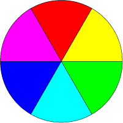
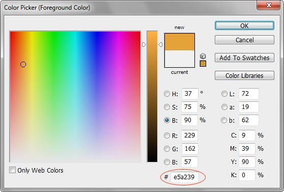

Цвет
| Internet Explorer | Chrome | Opera | Safari | Firefox |
| 1 | 1 | 2.1 | 1 | 1 |
| Android | Firefox Mobile | Opera Mobile | Safari Mobile |
| 1 | 1 | 6 | 1 |
В HTML цвет задаётся одним из двух путей: с помощью шестнадцатеричного кода и по названию некоторых цветов. Преимущественно используется способ, основанный на шестнадцатеричной системе исчисления, как наиболее универсальный.
Шестнадцатеричные цвета
Для задания цветов в HTML используются числа в шестнадцатеричном коде. Шестнадцатеричная система, в отличие от десятичной системы, базируется, как следует из её названия, на числе 16. Цифры будут следующие: 0, 1, 2, 3, 4, 5, 6, 7, 8, 9, A, B, C, D, E, F. Числа от 10 до 15 заменены латинскими буквами. В табл. 1 приведено соответствие десятичных и шестнадцатеричных чисел.
| Десятичные | 1 | 2 | 3 | 4 | 5 | 6 | 7 | 8 | 9 | 10 | 11 | 12 | 13 | 14 | 15 |
|---|---|---|---|---|---|---|---|---|---|---|---|---|---|---|---|
| Шестнадцатеричные | 1 | 2 | 3 | 4 | 5 | 6 | 7 | 8 | 9 | A | B | C | D | E | F |
Числа больше 15 в шестнадцатеричной системе образуются объединением двух чисел в одно (табл. 2). Например, числу 255 в десятичной системе соответствует число FF в шестнадцатеричной.
| Десятичные | 16 | 17 | 18 | 19 | 20 | 21 | 22 | 23 | 24 | 25 | 26 | 27 | 28 |
|---|---|---|---|---|---|---|---|---|---|---|---|---|---|
| Шестнадцатеричные | 10 | 11 | 12 | 13 | 14 | 15 | 16 | 17 | 18 | 19 | 1A | 1B | 1C |
Чтобы не возникало путаницы в определении системы счисления, перед шестнадцатеричным числом ставится символ решётки #, например #aa69cc.
Типичный цвет, используемый в HTML, выглядит следующим образом.
<body bgcolor="#fa8e47">Здесь цвет фона веб-страницы задан как #fa8e47. Символ решётки # перед числом означает, что оно шестнадцатеричное. Первые две цифры (fa) определяют красную составляющую цвета, цифры с третьей по четвертую (8e) — зелёную, а последние две цифры (47) — синюю. В итоге получится такой цвет.
| fa | + | 8e | + | 47 | = | fa8e47 |
Каждый из трёх цветов — красный, зелёный и синий — может принимать значения от 00 до FF, что в итоге образует 256 оттенков. Таким образом, общее количество цветов может быть 256х256х256 = 16.777.216 комбинаций. Цветовая модель, основанная на красной, зелёной и синей составляющей получила название RGB (red, green, blue; красный, зеленый, синий). Эта модель аддитивная (от англ. add — складывать), при которой сложение всех трёх компонент образует белый цвет.
Чтобы легче ориентироваться в шестнадцатеричных цветах, примите во внимание некоторые правила.
- Если значения компонент цвета одинаковы (например: #d6d6d6), то получится серый оттенок. Чем больше число, тем светлее цвет, значения при этом меняются от #000000 (черный) до #ffffff (белый).
- Ярко-красный цвет образуется, если красный компонент сделать максимальным (ff), а остальные компоненты обнулить. Цвет со значением #ff0000 самый красный из возможных красных оттенков. Аналогично обстоит с зелёным цветом (#00ff00) и синим (#0000ff).
- Жёлтый цвет (#ffff00) получается смешением красного с зеленым. Это хорошо видно на цветовом круге (рис. 1), где представлены основные цвета (красный, зелёный, синий) и комплиментарные или дополнительные. К ним относятся жёлтый, голубой и фиолетовый (ещё называемым пурпурным). Вообще, любой цвет можно получить смешением близлежащих к нему цветов. Так, голубой (#00ffff) получается за счет объединения синего и зелёного цвета.

Рис. 1. Цветовой круг
Цвета по шестнадцатеричным значениям не обязательно подбирать эмпирическим путем. Для этой цели подойдёт графический редактор, умеющий работать с разными цветовыми моделями, например, Adobe Photoshop. На рис. 2 показано окно для выбора цвета в этой программе, линией обведено полученное шестнадцатеричное значение текущего цвета. Его можно скопировать и вставить к себе в код.

Рис. 2. Окно для выбора цвета в программе Photoshop
Веб-цвета
Если установить качество цветопередачи монитора в 8 бит (256 цветов), то один и тот же цвет может показываться в разных браузерах по-своему. Это связано со способом отображения графики, когда браузер работает со своей собственной палитрой и не может показать цвет, который у него в палитре отсутствует. В этом случае цвет заменяется сочетанием пикселей других, близких к нему, цветов, имитирующих заданный. Чтобы цвет оставался неизменным в разных браузерах, ввели палитру так называемых веб-цветов. Веб-цветами называются такие цвета, для каждой составляющей — красной, зелёной и синей, устанавливается одно из шести значений — 0 (00), 51 (33), 102 (66), 153 (99), 204 (CC), 255 (FF). В скобках указано шестнадцатеричное значение данной компоненты. Общее количество цветов из всех возможных сочетаний даёт 6х6х6 — 216 цветов. Пример веб-цвета — #33ff66.
Основная особенность веб-цвета заключается в том, что он показывается одинаково во всех браузерах. В данный момент актуальность веб-цветов весьма мала из-за повышения качества мониторов и расширения их возможностей.
Цвета по названию
Чтобы не запоминать совокупность цифр, вместо них можно использовать имена широко используемых цветов. В табл. 3 приведены имена популярных названий цветов.
| Имя цвета | Цвет | Описание | Шестнадцатеричное значение |
|---|---|---|---|
| aqua | Голубой | #00ffff | |
| black | Черный | #000000 | |
| blue | Синий | #0000ff | |
| fuchsia | Фуксия | #ff00ff | |
| gray | Серый | #808080 | |
| green | Зеленый | #008000 | |
| lime | Светло-зеленый | #00ff00 | |
| maroon | Темно-красный | #800000 | |
| navy | Темно-синий | #000080 | |
| olive | Оливковый | #808000 | |
| purple | Фиолетовый | #800080 | |
| red | Красный | #ff0000 | |
| silver | Светло-серый | #c0c0c0 | |
| teal | Сине-зеленый | #008080 | |
| white | Белый | #ffffff | |
| yellow | Желтый | #ffff00 |